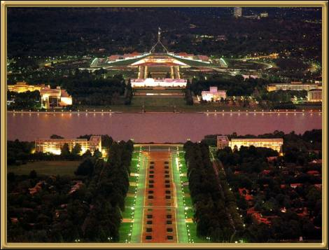

Photographer: Unknown
Looking down Anzac Way to the new Parliament House. This is actually in the
Australian Capital Territory, Canberra. The A.C.T. is quite a pretty area, and
Canberra is a very beautiful and superbly planned city. However, Canberra is really
a compromise. The capital of Australia used to be Melbourne, but (as noted
previously) there was a great deal of rivalry between Sydney and Melbourne, and in the end
it was decided to create the A.C.T. The city was designed by Walter Burley Griffin,
and there is a very attractive man-made lake in the city named after him.